2017-05-20 16:30:23
目录
作图流程
关于ggplot2
- 绘图语法Grammar of Graphics (by Leland Wilkinson)的程序实现
- 作者是 Hadley Wickham，R社区最知名的开发者之一
- Grammar of Graphics的核心理念: 分层(layered grammar)
- 作图过程被抽象为一系列层的叠加
- 一幅图的元素 (名词)包括:
- 数据data
- 变量映射mapping
- 图层layers
- 几何形状geometric object, 统计转换statistic transforamtion, 位置偏移position adjustment, 美学映射aesthetic mapping
- 尺度scale
- 坐标coordinate system
- 分面facet
- 针对各类元素，封装了丰富的处理函数(动词)
- GoG语法用统一的结构串联这些名词、动词，提供了一个处理图层的通用框架，兼备一致性和灵活性
流程
快速调用方法(类似lattice): qplot()
逐步调用方法
- 初始化
ggplot(): 初始化一个ggplot对象 - 绘制图层
geom_<形状>:geom_函数家族整合美学映射函数aes_、统计转换参数stat、位置偏移参数position、其他美学参数width、color等 - 修改尺度
scale_<尺度类型>:scale_函数家族用来指定视觉通道的映射方法 - 坐标系
coord_<坐标系>:coord_函数家族用来调整坐标系 - 分面
facet_grid/facet_wrap: 指定分面依据 - 美学修饰
guides: 调整尺度和视觉通道的映射关系theme: 低级函数，修改图中每个部件的呈现形式ggtitle,xlab,ylab: 图/坐标轴标题annotate: 图上加注
快速调用
语法
qplot用来快速生成统计图，但自定义弹性不大
qplot(x, y = NULL, ..., data, facets = NULL, margins = FALSE, geom = "auto", xlim = c(NA, NA), ylim = c(NA, NA), log = "", main = NULL, xlab = deparse(substitute(x)), ylab = deparse(substitute(y)), asp = NA, stat = NULL, position = NULL)
- x, y, …: 传入各个图层的变量
- data: 数据源，一般是data.frame
- facets, margins: 分面公式，是否显示边际分面
- geom: 向量，呈现为哪种几何形状
Hello World
指定连续变量x,y，自动适配散点图
library(ggplot2) qplot(displ, hwy, data = mpg)

添加图层
qplot(displ, hwy, data = mpg, geom = c("point", "smooth"))

尺度映射
将class映射到颜色通道，drv映射到形状
qplot(displ, hwy, data = mpg, shape = drv, color = class)

分面
qplot(displ, hwy, data = mpg, facets = . ~ drv, margins = TRUE)
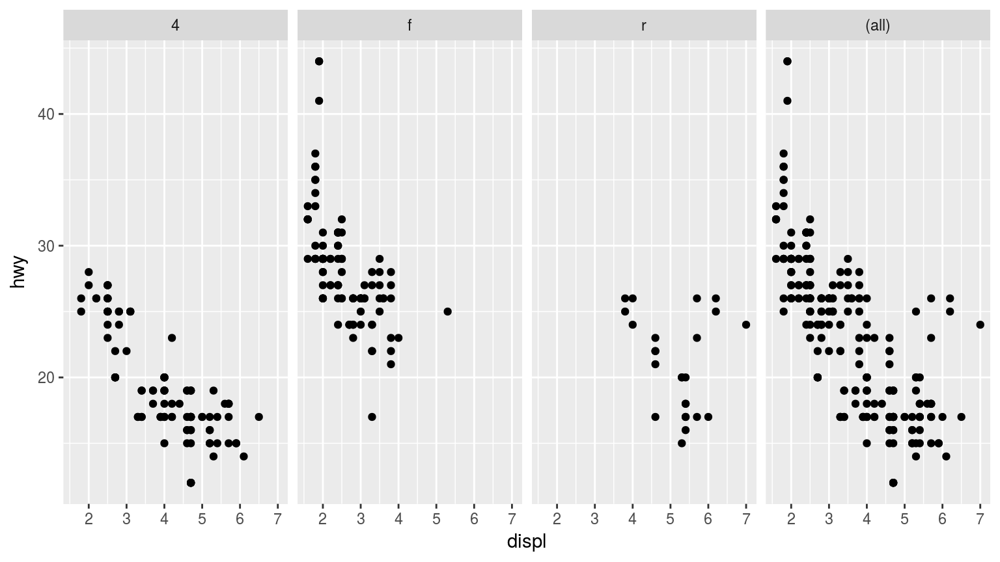
逐步调用
初始化 (ggplot)
ggplot(data = NULL, mapping = aes(), ..., environment = parent.frame())
- 语法
- data: 源数据，如不是data.frame，会先被
fortify函数预处理 - mapping: 美学映射，通过
aes函数传入
- data: 源数据，如不是data.frame，会先被
- 三种主要调用形式:
ggplot(df, aes(x, y, <other aesthetics>))ggplot(df)ggplot(): 如果一幅图要用到多个独立的数据源，data可留空
- 初始化以后形成一个ggplot对象，但没有任何图层，因此不能显示
图层 (geom_)
geom_<形状>(mapping = NULL, data = NULL, stat, position, ..., na.rm = FALSE,
show.legend = NA, inherit.aes = TRUE)
- mapping: 美学映射，可通过
aes或aes_函数指定。一般inherit.aes为TRUE，即从初始化的ggplot对象直接继承美学映射参数。 - data: 该图层用到的数据集
- NULL: 继承初始化的ggplot对象所包含的数据
- 一个data.frame或其他对象，将覆盖初始数据
- 一个function，该函数返回值必须是数据框
- stat: 统计转换方法，如"density", "count"
- position: 位置调整参数
- 文本，如"stack", "dodge"
- 函数，如
position_stack,position_dodge
- …: 通常是该图层的通用美学属性，如color, fill, 等
- show.legend: 可以是NA、TRUE或FALSE
aes 美学/视觉通道映射: 映射谁?
aes(x, y, ...)
- 传入参数可以是变量名，也可以是函数计算式
- 常见的美学映射属性包括（各自适用于特定geom_）
- x: x轴/rho变量 - y: y轴/theta变量 - xmin: x最小值 - xmax: x最大值 - ymin: y最小值 - ymax: y最大值 - xend: x终点 - yend: y终点 - alpha: 透明度 - colour: 边线色
- fill: 填充色 - group: 分组 - linetype: 线型 - size: 粗细/大小 - xintercept: x截距 - yintercept: y截距 - slope: 斜率 - weight: 权重 - shape: 形状 - stroke: 描边 - map_id: 地图多变性id
尺度 (scale_): 怎么映射?
scale_<视觉通道>_<映射方法>(...)
- 视觉通道:
- x
- y
- colour
- fill
- alpha
- linetype
- radius
- shape
- size
- 映射方法:
- continuous/discrete: 连续/离散
- identity: 直接映射到视觉通道
- brewer/distiller: ColorBrewer色阶
- gradient/gradient2/gradientn: 渐变色阶
- date/datetime/time: 日期或时间
- grey/hue: 灰度/色谱
- log10/reverse/sqrt: 对数/逆序/开方
- manual: 手工指定(自定义)
坐标系 (coord_)
coord_cartesian: 直角平面坐标系coord_fixed: 固定长宽比的直角坐标系coord_equal: 特例
coord_flip: 颠倒x/ycoord_map: 地图坐标系,projection指定投影方法coord_quickmap: 快捷地图坐标系
coord_polar: 极坐标系coord_trans: 自定义调整坐标系
分面 (facet_)
- 在网格中定义矩阵分面
facets必须是公式(行~列)
facet_grid(facets, margins = FALSE, scales = "fixed", space = "fixed", shrink = TRUE, labeller = "label_value", as.table = TRUE, switch = NULL, drop = TRUE)
- 把一维面板图转为二维
facets可以是公式(~a + b,)或文本向量(c("a", "b"))
facet_wrap(facets, nrow = NULL, ncol = NULL, scales = "fixed", shrink = TRUE, labeller = "label_value", as.table = TRUE, switch = NULL, drop = TRUE, dir = "h", strip.position = "top")
修饰
guides调整尺度效果
guides可以在定义尺度时一并定义，也可单独用
guides函数统一定义实现同一效果:
p + guides(colour = "colorbar", size = "legend", shape = "legend")p + guides(colour = guide_colorbar(), size = guide_legend(), shape = guide_legend())p + scale_colour_continuous(guide = "colorbar") + scale_size_discrete(guide = "legend") + scale_shape(guide = "legend")
theme调整图形部件
theme(line, rect, text, title, aspect.ratio, axis.title, axis.title.x, axis.title.x.top, axis.title.y, axis.title.y.right, axis.text, axis.text.x, axis.text.x.top, axis.text.y, axis.text.y.right, axis.ticks, axis.ticks.x, axis.ticks.y, axis.ticks.length, axis.line, axis.line.x, axis.line.y, legend.background, legend.margin, legend.spacing, legend.spacing.x, legend.spacing.y, legend.key, legend.key.size, legend.key.height, legend.key.width, legend.text, legend.text.align, legend.title, legend.title.align, legend.position, legend.direction, legend.justification, legend.box, legend.box.just, legend.box.margin, legend.box.background, legend.box.spacing, panel.background, panel.border, panel.spacing, panel.spacing.x, panel.spacing.y, panel.grid, panel.grid.major, panel.grid.minor, panel.grid.major.x, panel.grid.major.y, panel.grid.minor.x, panel.grid.minor.y, panel.ontop, plot.background, plot.title, plot.subtitle, plot.caption, plot.margin, strip.background, strip.placement, strip.text, strip.text.x, strip.text.y, strip.switch.pad.grid, strip.switch.pad.wrap, ..., complete = FALSE, validate = TRUE)
各部件可调用对应的element_函数进行编辑: element_line, element_rect, element_text
theme_套用主题
- ggplot2中提供了一些主题函数，你也可以通过
theme()自制主题theme_bw: 白底主题theme_classic: 经典主题theme_dark: 夜色主题theme_gray/theme_grey: (默认)灰色主题theme_light: 简洁主题theme_linedraw: 描线主题theme_minimal: 最小化主题theme_void: 极简主题
ggthemes包提供了包括更多主题，如excel,gdocs,economist,wsj
ggtitle, xlab, ylab定义标题
labs(...): 定义title, caption, subtitle及美学属性xlab(label)/ylab(lable)/ggtitle(label, subtitle = NULL)
annotate定义注释
annotate(geom, x = NULL, y = NULL, xmin = NULL, xmax = NULL, ymin = NULL, ymax = NULL, xend = NULL, yend = NULL, ..., na.rm = FALSE)
- geom: 多边形类型，'text', 'rect',
segment,pointrange - x, y, xmin, ymin, xmax, ymax, xend, yend: 在图中的位置，至少用到一个
- …: 一般是美学属性
举例
同样的例子，用逐步法实现
p = ggplot(mpg, aes(displ, hwy)) p # 仅初始化，什么都不显示
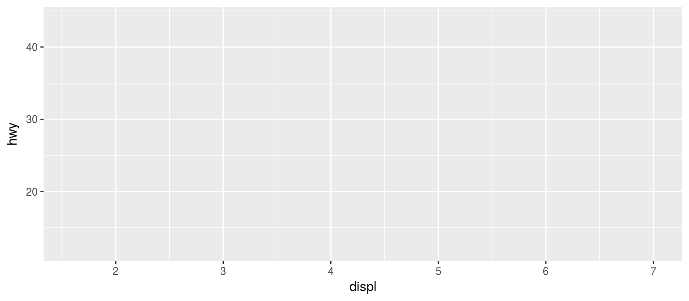
添加图层
将class映射到颜色通道，drv映射到形状
p = p + geom_point(aes(shape=drv, color=class)) + geom_smooth(method="loess") p

尺度映射
调整映射方法
p1 = p + scale_shape_manual(values=c("4"=1, "f"=2, "r"=3)) + scale_color_brewer()
p1

分面
p = p + facet_grid(~drv) p

套用主题
p + theme_light()

个性化修饰
p + theme(panel.background=element_blank(), panel.grid.major.y=element_line(color="gray"),
axis.line.x=element_line(color="darkgray")) +
guides(colour = guide_legend("Car Type", order=1), shape = guide_legend("Driver"))

一大堆用例
散点图 points
散点图: 两变量相关性
ggplot(mtcars, aes(wt, mpg)) + geom_point()
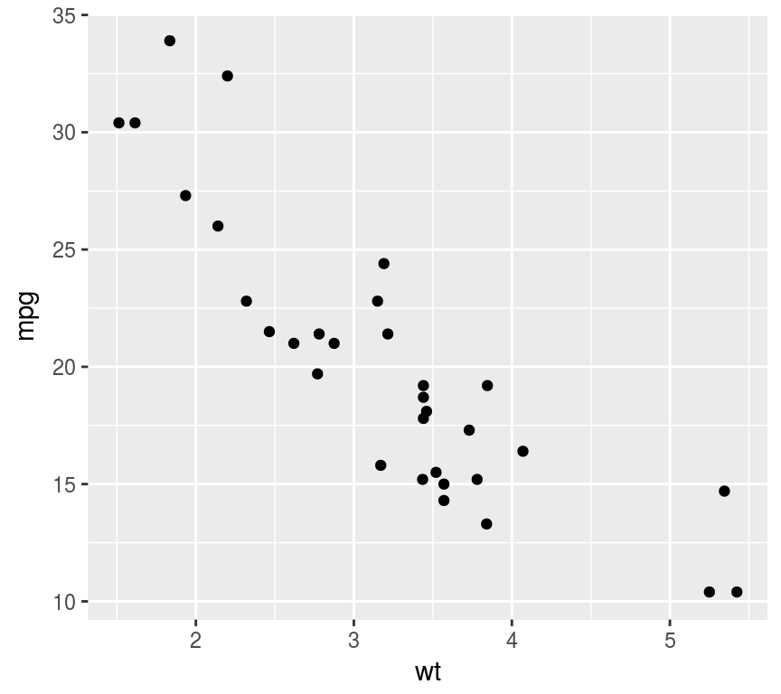
文本型变量作散点图
ggplot(OrchardSprays, aes(treatment, decrease)) +
geom_point()
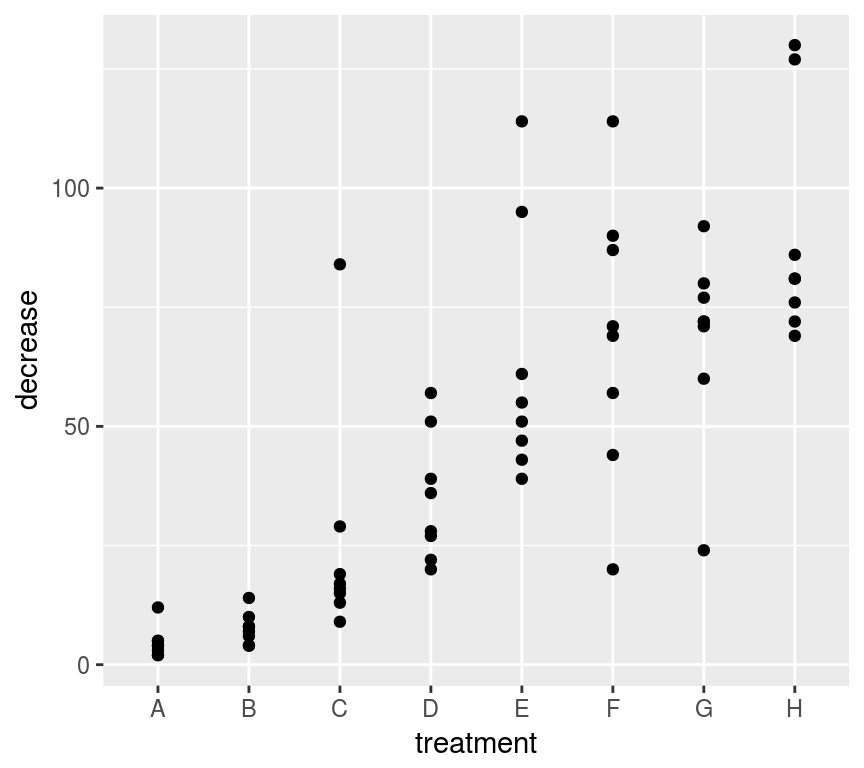
直方图 histogram
直方图: 单变量密度分布
ggplot(mtcars, aes(mpg)) + geom_histogram(bins=9)
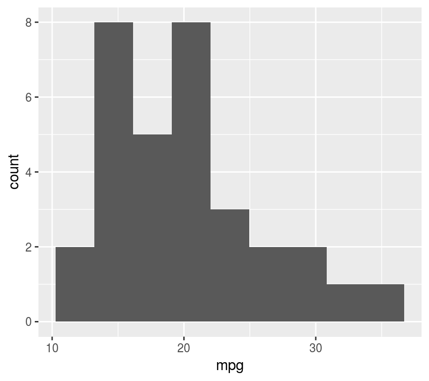
或用密度图
ggplot(mtcars, aes(mpg)) + geom_density()

箱式图 boxplot
连续性变量的分布
ggplot(ToothGrowth, aes("", len)) + geom_boxplot()
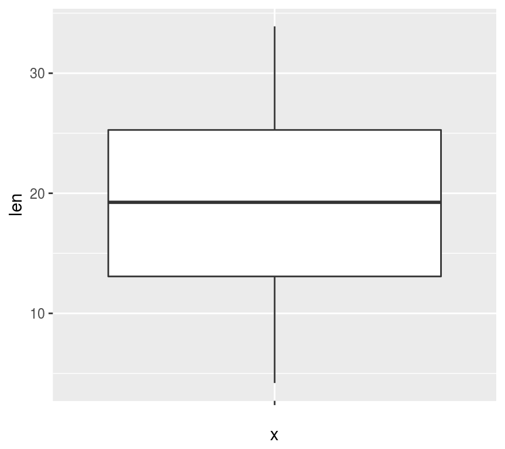
多个箱式图
ggplot(ToothGrowth, aes(dose, len,
color=factor(dose))) + geom_boxplot()

柱/条形图 barplot
分类变量的比较
hp <- data.frame(hp=mtcars$hp,
names = row.names(mtcars))
ggplot(hp, aes(names, hp)) + geom_col()
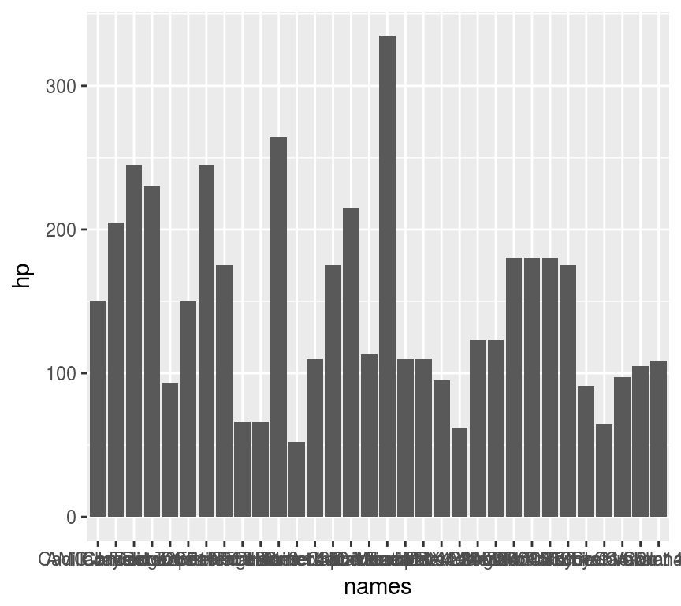
自变量较多时用横向条图
ggplot(hp, aes(names, hp)) +
geom_bar(stat="identity") + coord_flip()
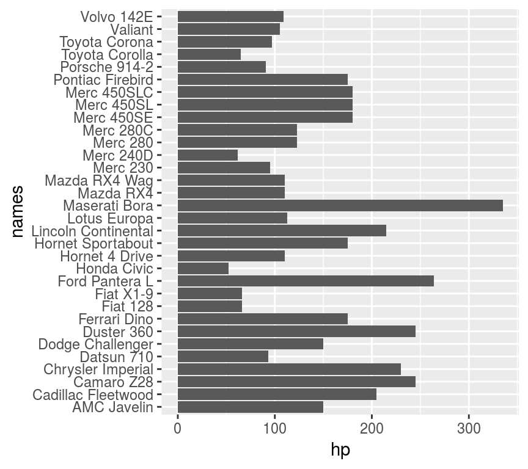
折线图 lines
ts类型数据要先转换
AP <- data.frame(n=as.numeric(AirPassengers),
t=zoo::as.Date(time(AirPassengers)))
ggplot(AP, aes(t, n)) + geom_line()
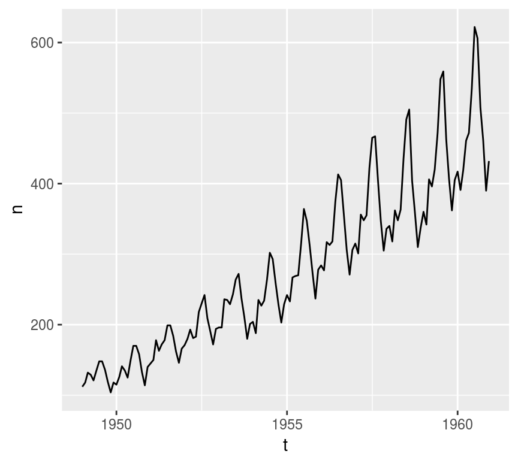
阶梯折线
ggplot(AP, aes(t, n)) + geom_step()
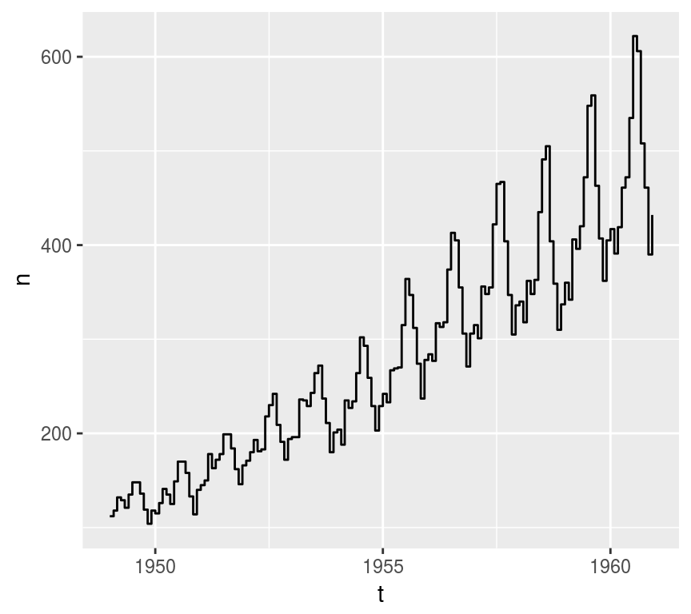
饼图 Pies
需要用coord_polar
admit <- data.frame(Admit=c("Admitted", "Rejected"),
n=apply(UCBAdmissions, 1, sum))
ggplot(admit, aes("", n, fill=Admit)) +
geom_bar(stat="identity", position="stack",
width=1) + coord_polar(theta="y")
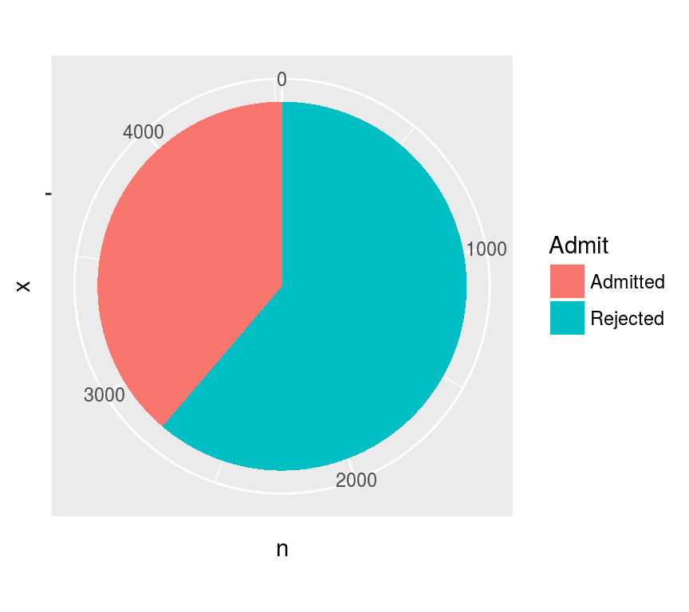
玫瑰图: position='dodge'
ggplot(admit, aes("", n, fill=Admit)) +
geom_bar(stat="identity", position="dodge",
width=1) + coord_polar()
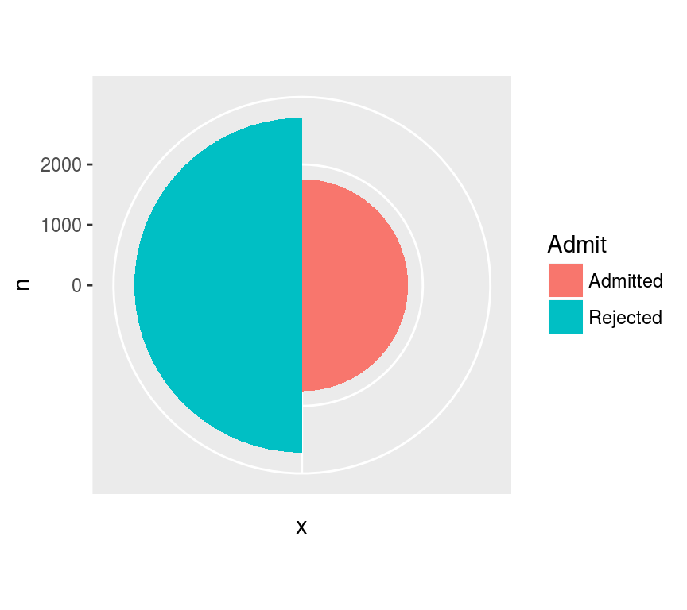
Thank you!